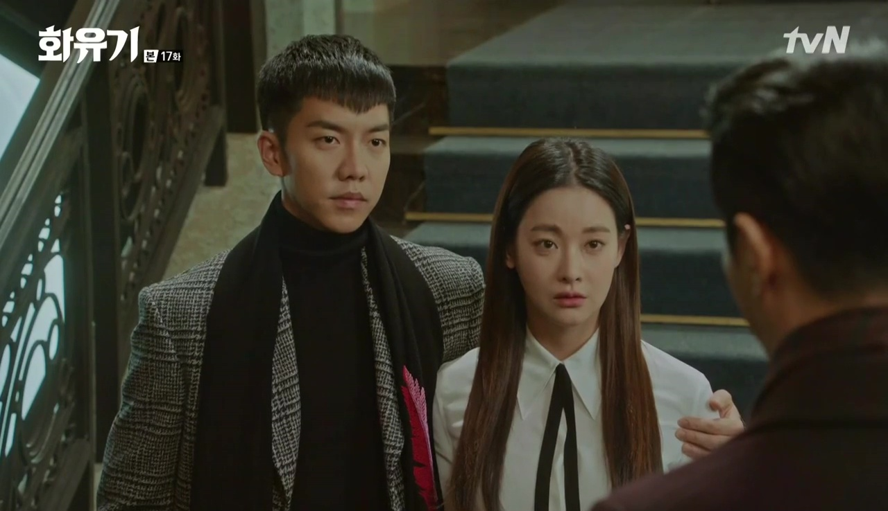
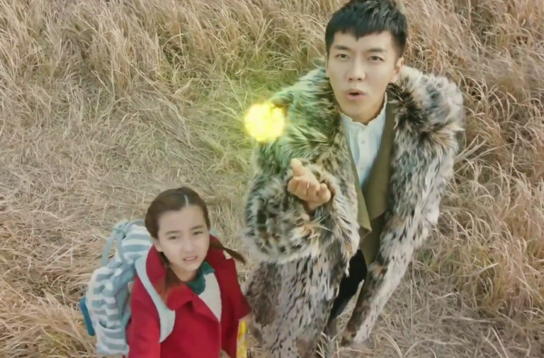
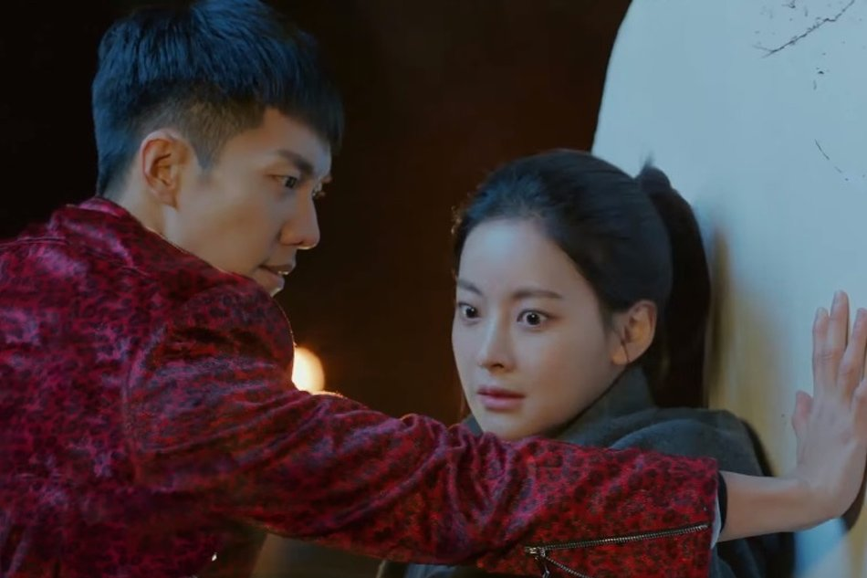
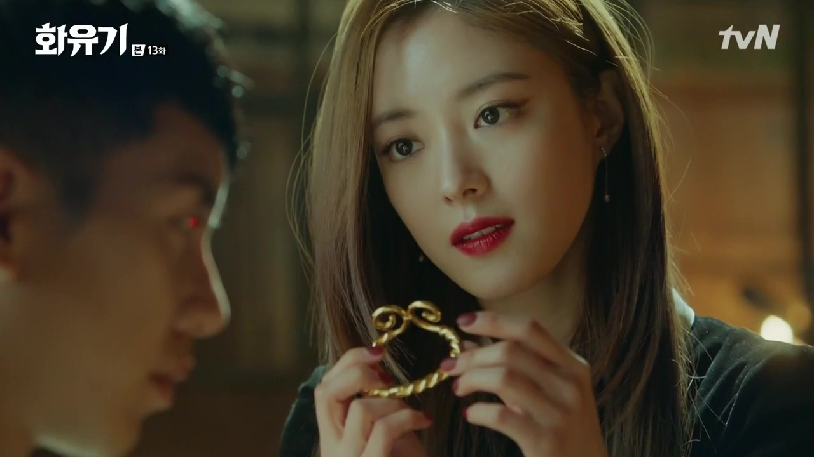
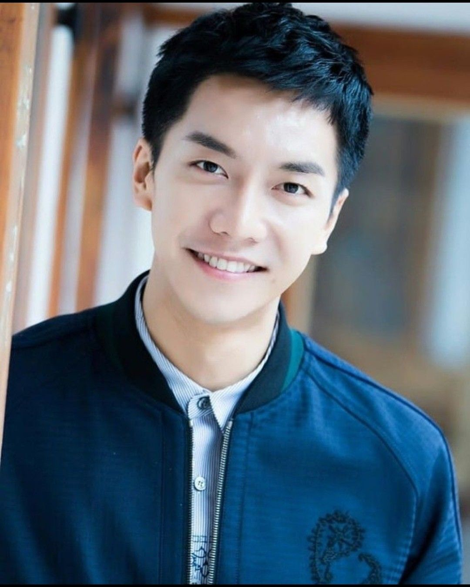
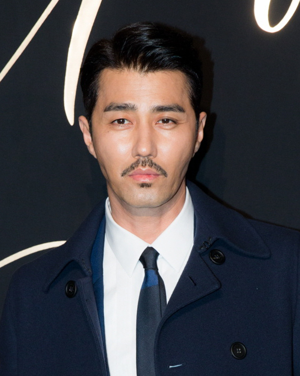
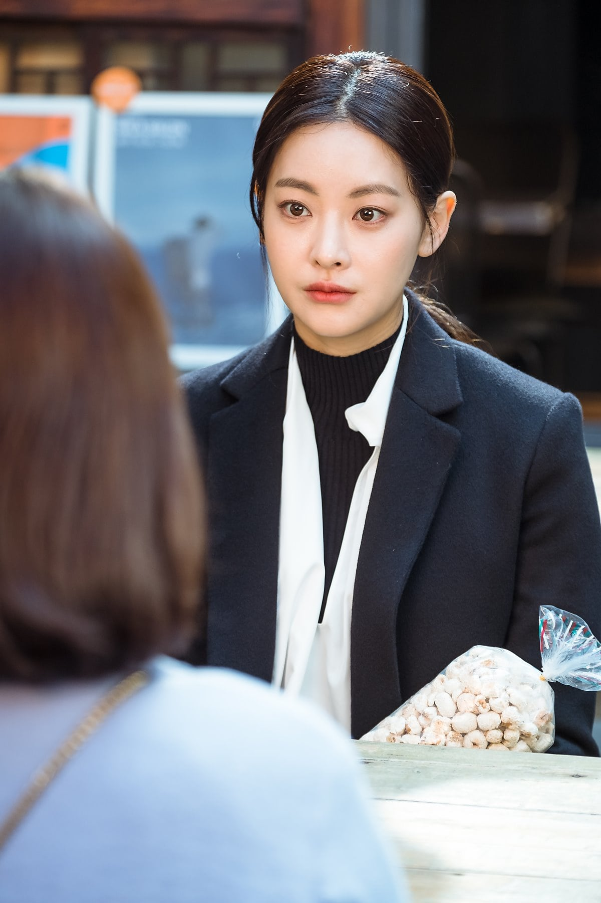
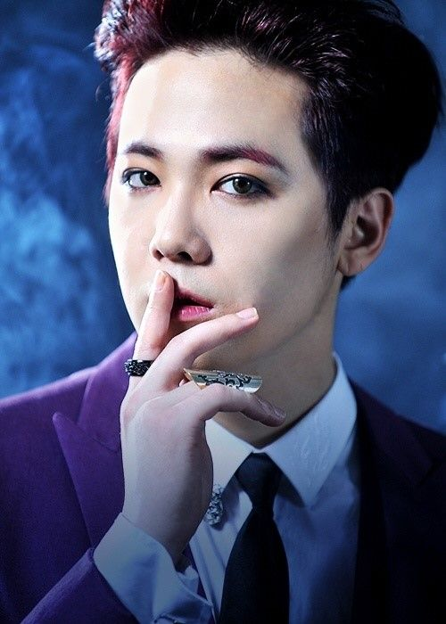
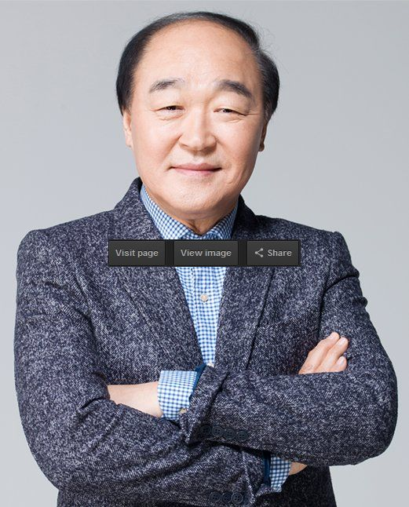

This a South Korean fantasy television series starring Lee Seung-gi, Cha Seung-won, Oh Yeon-seo, Lee Hong-gi and Jang Gwang. Written by the Hong sisters, the drama is a modern spin-off of the Chinese classic novel Journey to the West. It aired on tvN starting December 23, 2017, every Saturday and Sunday at 21:00 (KST).
Scene Photo
   Movie Info
In 2017, Son Oh-Gong and Ma-Wang are in conflict with each other as they look for a true light in a dark world where evil thrives. From there, Son Oh-Gong is bound to his protective role towards Seon-mi, the little girl he had met years ago. Having made a contract with Seon-mi 25 years ago, entitling her to seek help from Son Oh-Gong whenever she calls him in exchange for letting him free, the two meet again in a fateful encounter. Seon-mi is a young a girl cursed with the ability to see ghosts and spirits. Her seemingly irrational behavior has isolated her from her family and peers, and her only protection is her grandmother and a small yellow umbrella with protection spells written by a Buddhist monk. One day when she walks home from school, a ghost follows her, and this is witnessed by a mysterious man in a suit and black top hat (Woo Ma-Wang). The mysterious man exorcises the ghost for her, and asks her for a favor: to enter a magical house and retrieve a certain fan. She is also given specific instructions to ignore anyone she sees in there. However, the person inside the house is Son Oh-Gong, the Monkey King, who was imprisoned inside by Heaven for his crimes. He blocks her path and forces her to acknowledge him, and tells her that the man outside is a great danger to her as well. Oh-Gong makes her a deal: if she puts out the five candles on the table and frees him, he promises to protect her from all dangers in her life every time she calls his name. But after she agrees and releases him, Oh-Gong steals the memory of his name out of her head and makes a run for it, leaving young Seon-mi stranded in the middle of nowhere.
- Genre:Fantasy , Romance , Comedy , Horror
- Director:Park Hong-kyun , Kim Jung-hyun and Kim Byung-soo
- Writer:Hong Jung-eun and Hong Mi-ran
- Original Release: December 23, 2017 – March 4, 2018
- No. of Episodes: 20 Episodes
Cast
 Lee Seung-gi as Son Oh-Gong (based on Sun Wukong)An extremely powerful immortal who was exiled to the human world with his powers sealed, due to his mischievous and prideful nature. Jin Seon-mi is the love of his life. He possesses many powers, such as Pyrokenesis, and body imprisonment.
 Cha Seung-won as Woo Hwi-chul / Woo Ma-Wang (based on the Bull Demon King)CEO of Lucifer Entertainment. A gentle and charismatic businessman, he is the object of others’ envy due to his popularity. He has a bad history with Son Oh-gong in the past, and now seeks chances to become a deity through 'collecting' points in order to change the fate of the woman he loves. He has supernatural powers that can affect Son Oh Gong.
 Oh Yeon-seo as Jin Seon-mi / Sam-jang (based on Tang Sanzang)Kal So-won as young Jin Seon-miA real estate CEO who resells houses that have had notoriously bad luck (inhabited by evil spirits). She is wealthy, beautiful and has an unyielding tenacity. When she was a kid, she was ostracized by her peers. She meets Ma-Wang, and releases Son Oh-gong from his prison, and later meets him again by fate. Son Oh-Gong is the love of her life. She used to have the ability to see ghosts, but gets her ability stolen.
 Lee Hong-gi as P.K / Jeo Pal-gye (based on Zhu Bajie)A top star under Woo Hwi-chul's agency. He has the power to seduce women and sucks the life force out of them. He is a pig demon.
 Jang Gwang as Yoon Dae-sik / Sa Oh-jeong (based on Sha Wujing)CEO of MSUN, a mobile phone manufacturing company.
Production
- Executive producer(s):
- Lee Jin-suk
Park Bo-gum was offered the lead role of Son Oh-gong in July 2017, but eventually declined.Choo Ja-hyun was originally cast in the cameo role of Na Chal-nyeo, but had to be replaced by Kim Ji-soo due to pregnancy. The series reunites Cha Seung-won, Lee Seung-gi, and Lee Hong-gi with the Hong sisters, who have worked together in the TV series The Greatest Love (2011), My Girlfriend Is a Nine-Tailed Fox (2010) and You're Beautiful (2009) respectively. It also reunited Hong sisters and director. Park Hong-kyun, who worked together on Warm and Cozy (2015) and The Greatest Love (2011). It also reunites Lee and Cha who starred together in You're All Surrounded (2014). On December 27, it was announced that director Kim Jung-hyun will join the production.A third director, Kim Byung-soo was added to the production on January 5, 2018.